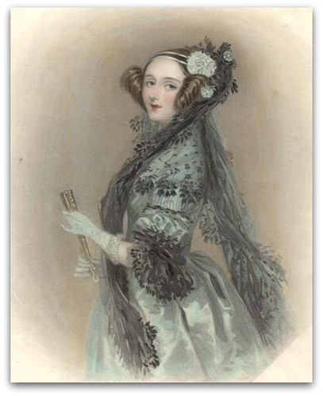

Programski jeziki so obstajali še pred izumom računalnikov in človeku berljivih kod, ki se v programiranju uporabljajo danes. Prvi prelomni dogodek se je zgodil leta 1843, ko je Ada Lovelace zasnovala prvi računalniški algoritem (program), ki je bil namenjen Babbageovem stroju. Ta program žal ni bi preizkušen, saj Babbage ni nikoli dokončal svojega stroja.
V 40. letih se pojavi prvi visokonivojski jezik, ki ga izumi Konrad Zuse s podjetjem Plankalkul. Ta program je že vseboval številne kode, ki jih programerji uporabljajo še danes. Temu je seveda sledil še prvi zbirni jezik, izumljen leta 1949
V 50. je sledil izum programskega jezika Autocode, ki je veljal za prvi prevedeni programski jezik, kar pomeni, da je omogočal pretvorbo strojne kode s pomočjo prevajalnika. Leta 1957 John Backus ustvari jezik imenovan FORTRAN, ki je bil prvi primeren za reševanje znanstvenih in matematičnih problemov. Leto kasneje sledita še ALGOL in LISP. ALGOL je imel velik vpliv na številne znane programske jezike, ki se uporabljajo še danes (C, C++, Java), LISP pa je bil ustvarjen za umetno inteligenco, ki je v današnjih časih v porastu. Leta 1959 pa Grace Hooper razvije COBOL, ki velja za prvi jezik tretje generacije, in je bil uporabljen za številne poslovne aplikacije. Tudi danes je še vedno v uporabi, zlasti v bančništvu.
V 60. letih so se začele potrebe po učenju programiranja, zato leta 1964 na kolidžu Dartmouth izumijo BASIC, ki je bil namenjen začetnikom. Temu je sledil tudi Niklaus Wirth, ki leta 1970 uvede PASCAL, ki je bil razvit posebej za učenje programiranja. Kasneje ga podpre tudi Apple.
Tako so bili uveljavljeni začetki programiranja. Kasneje smo skozi leta pridobivali več in več jezikov. Nekateri so postali zelo priljubljeni drugi manj. Med priljubljene gotovo uvrščamo še programski jezik C++ (1983), Python (1991), Java (1995) o katerih lahko izveste več na tej spletni strani.
Povzeto iz Praxent.(30.6.2020). The History of Programming languages: A timeline of notable events
Programski jeziki brez programerjev ne bi pomenili prav ničesar, zato je prav da se omeni osebo, ki velja za prvo programerko. To je že prej omenjena Ada Lovelace. Ada se je rodila, 10.12.1815 in umrla 27.10.1852. Bila je angleška matematičarka in tesna sodelavka Charlesa Babbagea (oče računalništva). Za njegov stroj je napisala prvi program.
Za Babbageove stroje se je začela zanimati leta 1833, ko jo je z Babbageom seznanila njuna skupna prijateljica, pisateljica Mary Somerville. Najbolj znana pa je po tem, da je leta 1843 prevedla in opremila z obsežnimi opombami članek italijanskega matematika in inženirja Luigija Federica Menabree z naslovom "Notions sur la machine analytique de Charles Babbage" (Elementi analitičnegba stroja Charlesa Babbagea, 1842). Njene izčrpne in podrobne opombe, še posebej njen opis, kako bi bilo mogoče analitični stroj programirati za izračunavanje Bernoullijevih števil, so bile izjemne
Kot zanimivost, leta 1838 je Ada postalal grofica, saj je bila poročena z baronom Kingom, ki je bil istega leta povzdignjen v grofa.
